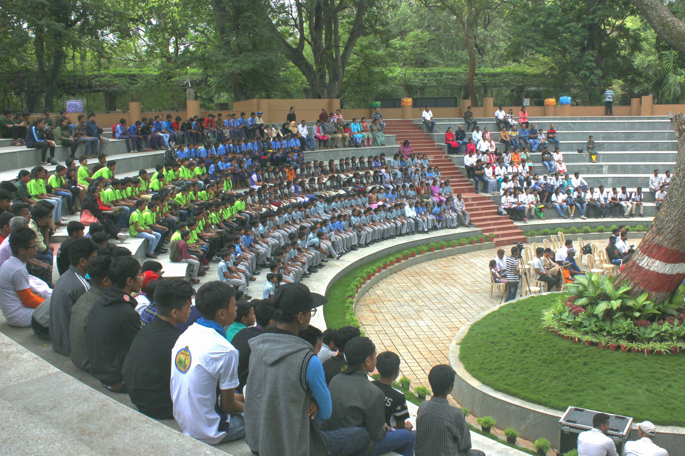
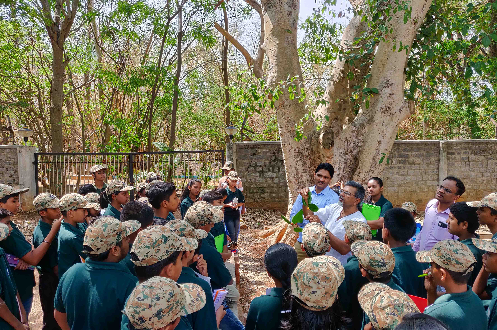
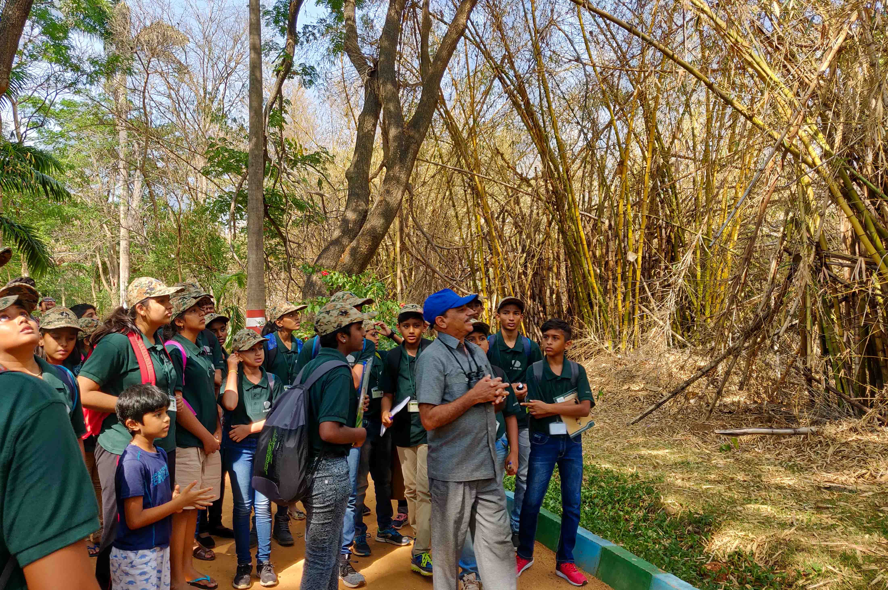

Zoo is organizing the Summer Camp since the year 2005 for students in the age group of 12 to 18 years for a period of 10 days during the month of April and May. Students are exposed to basics of Wildlife conservation, Captive Wild Animal management, Animal behavioral studies, Wildlife crimes and laws, Health Care Management in Captive Animal and Wildlife Protection and its importance. Experienced resource persons and concerned field experts are invited to interact with the participants. Field practical includes zoo patrol, interaction with animal keepers, visit to Karanji Lake Nature Park and Regional Museum of Natural History, which are adjacent to the Zoo. At the end the participants will be given certificates during the valedictory function.
  